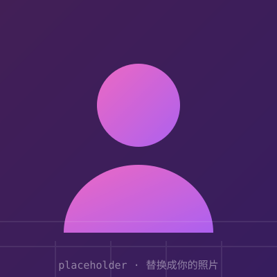

智能待办清单
支持自然语言输入、自动拆解任务的 GTD 工具，界面做得非常克制。（项目描述占位）
简单介绍一下我自己。

我是一名开发者（身份占位：学生 / 后端工程师 / 独立开发者……）， 平时喜欢折腾各种有意思的技术，把脑子里冒出来的想法快速做成能用的东西。
工作之余我维护几个小项目，也写写博客记录踩坑经验。 相信「输出是最好的输入」，也相信慢慢来比较快。
顺便一提：这个页面本身也是我亲手写的——没有用模板， HTML / CSS / JS 一行行敲的，欢迎查看源码。
我熟悉的工具与技术，以及正在学习的东西。
一些我做过、或正在做的 side project，持续更新中。
支持自然语言输入、自动拆解任务的 GTD 工具，界面做得非常克制。（项目描述占位）
从零手写的静态博客，支持 Markdown 渲染与暗色模式，就是你现在看到的这个站。（描述占位）
在命令行里看天气预报的 CLI 小工具，支持 ASCII 图表输出，极客感拉满。（描述占位）
可自由配置的数据大屏：拖拽布局、实时刷新，个人仪表盘一步到位。（描述占位）
后台常驻的桌面小工具：选中即翻译、即总结，把 LLM 变成顺手的基础设施。（描述占位）
一套深色优先的轻量 UI 组件库，文档齐全，这个网站的按钮和卡片就出自它。（描述占位）